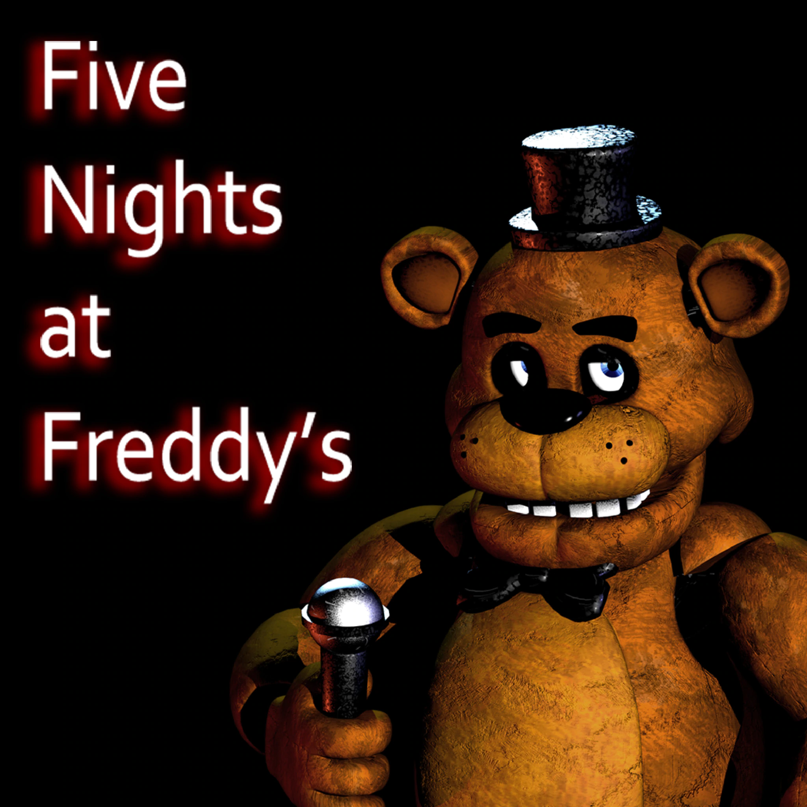

Intro
The gaming industry is a booming business. There are various types of games for people to choose from. You probably already heard about some of them, like MOBA, first-person shooting, role-playing games, etc. However, there is still one type of game that people are afraid of playing, yet still go crazy and would like to play it. This is the horror game.
What is Horror Game
Obviously, from its name, it is the type of video game that mainly contains scary stuff. A more academic explanation is “a video game genre centered on horror fiction and typically designed to scare the player.” After years and years of development. The player community has assigned five categories to specify different types of horror games. They are survival horror, action horror, psychological horror, jump-scare horror, and reverse horror.
Categories of Horror Game
Survival horror games
One of the best-defined and most common types of horror games is survival horror games. These games tend to focus on the survival of the player-character in a horror setting with limited resources, and thus tend to be more geared as an action game or action-adventure game. A great example is The Resident Evil series.
Action-horror games
Action horror games are a spinoff of survival horror games, where more action game elements from first-person and third-person shooter games are used alongside the survival horror themes, making them more fast-paced than prior survivor horror games. The most known example is The Last Of Us.

Psychological horror games
Psychological horror games are meant to scare the player through emotional, mental, or psychological states rather than through monsters or scares. The fear comes from "what is not seen, rather than what is". These games commonly rely on the player-character's unreliable perceptions or questionable sanity in order to develop the story. Through the use of unreliable narrators, such games may explore the fear of losing one's capacity to think rationally or even to recognize one's own identity. Psychological horror games may not depend as much on action compared with survival horror games, instead of giving time for the player to explore and witness events. One great example is Layers of Fear.

Jump-scare horror games
Designed to scare the player with the most useful tools of immediate surprise and shock, the jump-scare horror game is the most easily made and successful gameplay to scare players, while the lowest design level. The classic well-known jump-scare game is Five Nights At Freddy’s series.

Reverse horror game
Reverse horror game: Reverse horror games involve the player scaring others, rather than the player being scared. The player now is able to be the monster in the game to scare other players with all the possible strategies listed above. However, due to its PVP game style, this type of horror is less scary because players know the monster was remotely controlled by others, competitive game environment, and balance. Representative work is Dead by Daylight.